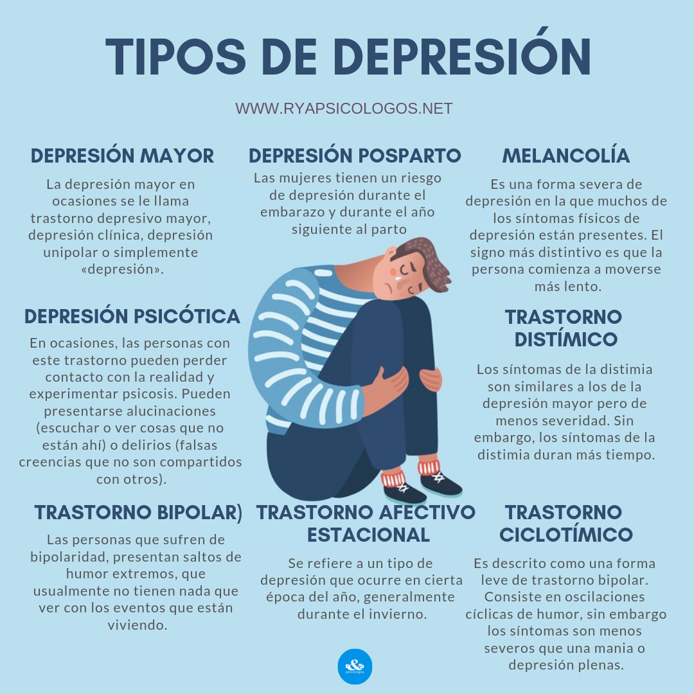

La depresión es un trastorno mental frecuente y una de las principales causas de discapacidad en todo el mundo. Afecta a más de 300 millones de personas en todo el mundo, con mayor prevalencia en las mujeres que en los hombres.
Frases
Nadie te puede hacer sentir inferior sin tu consentimiento
Frases
No dejes que lo que no puedes hacer interfiera con lo que puedes hacer
Frases
Ha sido mi filosofía que las dificultades se desvanecen cuando las encaramos
Frases
La felicidad es el privilegio de ser bien engañado

Frases
El que controla a otros puede ser poderoso, pero el que se controla a otros es aún más fuerte
El paciente con depresión presenta tristeza, pérdida de interés y de la capacidad de disfrutar, sentimientos de culpa o baja autoestima, trastornos del sueño o del apetito, cansancio y falta de concentración. También puede presentar diversos síntomas físicos sin causas orgánicas aparentes. La depresión puede ser de larga duración o recurrente, y afecta considerablemente a la capacidad de llevar a cabo las actividades laborales y académicas y de afrontar la vida cotidiana. En su forma más grave, puede conducir al suicidio.
Se ha demostrado que los programas preventivos reducen su incidencia tanto en los niños (por ejemplo, mediante la protección y el apoyo psicológico en casos de maltrato físico o abuso sexual) y en los adultos (por ejemplo, mediante la asistencia psicosocial después de catástrofes naturales o conflictos bélicos).
En el tratamiento de la depresión se tienen en cuenta los aspectos psicosociales y se determinan los factores que pueden causar estrés, como las dificultades económicas, los problemas en el trabajo y el maltrato físico o psicológico, así como las fuentes de apoyo, como los familiares y amigos. El mantenimiento o la recuperación de las redes y las actividades sociales son también importantes.
(Organizacion mundial de la salud; Trastornos mentales-Demencia; URL(https://www.who.int/es/news-room/fact-sheets/detail/mental-disorders))